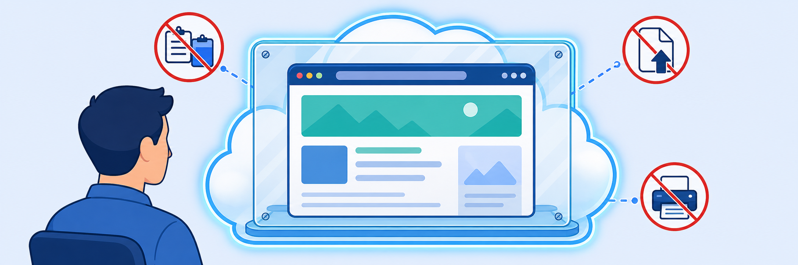

Lab 7: ZDX Cloud App Monitoring
Scenario: As an IT engineer, you've received multiple tickets from remote users reporting that an internal application is slow and that Microsoft Teams calls have choppy audio in the afternoon. The Service Desk can confirm that the users are connected, but cannot tell whether the degradation comes from the user's local Wi-Fi or ISP, an intermediate network hop, DNS resolution, the internet path, or the cloud provider or application itself. To isolate the issue proactively and create repeatable monitoring, you use Zscaler Digital Experience (ZDX) probes: first you define a custom application for a business-critical SaaS destination, then you deploy a Web probe and a Cloud Path probe.
- Configure a custom application in your Experience Center tenant to monitor a business-critical SaaS destination used by remote users.
- Provision a Web probe for the custom application to measure availability and web transaction performance.
- Provision a Cloud Path probe for the same application to measure network-path health (latency, loss and jitter).

In this task, you add an end user collection in the Experience Center portal.
- Sign in to the Experience Center portal.
- On Corp Client PC 1, go to
console.zscaler.com. - Sign in with the tenant credentials from your lab access instructions:
student@<Student FQDN>and your session password.
- On Corp Client PC 1, go to
- In the Experience Center home page, type
Probesin the Search menu and select the matching option (Digital Experience > Settings & Configuration).- Select Add to create an end user collection.
- In the Add End User Collection drawer, enter the following values:
- Under End User Collection Settings: Name
Custom Application. - Under Exclusion Criteria: User Groups, Users, Location Group, Zscaler Locations, Departments and Devices all set to None.
- Under Probing Criteria: All User Groups, All Users, All Location Groups, All Zscaler Locations, All Departments and All Devices.
- Under End User Collection Settings: Name
- Select Add.
- Confirm that the end user collection named Custom Application appears in the list.
In this task, you create a custom application inside the collection.
- Go to the end user collection created in Task 7.1 and select Add Application.
- In the Add Application drawer, enter the following values:
- Name:
Mail Server - Status: Disable
- Application Type: Custom
- Name:
- Select Add.
- Confirm that the Mail Server application is created under the end user collection.
Note: You enable the Mail Server application after you add a probe.
In this task, you configure probes for the custom application you created in Task 7.2.
- Under the Mail Server application, select Add Probe.
- In Add Probe in Custom Application, select End User Web, then select Next.
- Under Configure Web Probe, enter the following values, then select Next:
- Under General:
- Name:
Mail Server_Web - Application: Mail Server
- Run Frequency (minutes):
5 - Destination URL:
https://mail.google.com
- Name:
- Under Probing Criteria: Users, User Group, Locations, Location Group, Departments and OS all set to All.
- Under Exclusion Criteria: Users, User Group, Locations, Location Group, Departments and OS all set to None.
- Under Additional Parameters:
- Number of Attempts:
2 - Timeout (seconds):
60 - Follow Redirect: Enable
- Maximum Redirects:
5
- Number of Attempts:
- Under General:
- Review the configuration, then select Submit to create the Web probe.
- Edit the application: open Actions › Edit, set Status to Enabled in the Edit Application drawer, then select Update.
Note: When you enable the custom application, ZDX automatically enables its Web probe. Depending on your organisation's ZDX plan, metrics can take 15–30 minutes to appear for a newly configured application. Continue to the next lab and return later to verify the metrics.
- Add a Cloud Path probe.
- Select Add Probe for the Mail Server application, select End User Cloud Path, then select Next.
- In Configure Cloud Probe, enter the following values, then select Next:
- Name:
Mail Server_Cloud - Status: Enable
- Application: Mail Server
- Probe Type: Cloud Path
- Follow Web Probe:
Mail Server_Web - Run Frequency (minutes):
5 - Cloud Path Host:
mail.google.com
- Name:
- Under Probing Criteria: Users, User Group, Locations, Location Group, Departments and Devices all set to All.
- Under Exclusion Criteria: Users, User Group, Locations, Location Group, Departments and Devices all set to None.
- Under Cloud Path Probe Configuration:
- Protocol: ICMP
- Packet Count:
5 - Interval (ms):
1000 - Timeout (ms):
1000
- Review the probe configuration, then select Submit to create the probe.
- Confirm that the Mail Server_Web and Mail Server_Cloud probes appear under the Mail Server application.